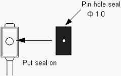
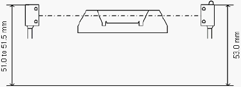
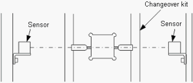
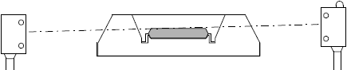
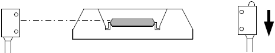
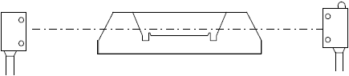
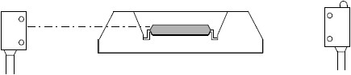

A3-1 How to adjust about device detection sensor of Output shuttle ( 1 )
Photoelectric sensor adjustment for NS-6000
Shuttle Unloading side IC Detection Adjustment
1. Preparation
Put the seal with the pin hole Φ 1.0 on the light receiving side photoelectric sensor.
* Detection is available without the seal, however, for small thin devices, it is easier to adjust the sensor and also the precision is stabilized with the pin hole seal.

2. Adjust the sensor height.
Light projection side - 51.0 to 51.5 mm from the base surface
Light receiving side - 53.0 mm from the base surface

3. Move the Index Shuttle 1 and 2 to the Unloading side. P23, P24
Place the changeover kit on the shuttle plate and confirm that the green lamp is ON.
* If the green lamp is OFF, the light axis may be misaligned. Adjust the sensor position.

4. Place the device in the shuttle pocket.

5. Gradually lower the light receiving side sensor and fix at the position where the lamps status changes from green is OFF -> red and green are ON.

6. Take out the device. Confirm that the green lamp is ON.
If the green lamp is OFF, the sensor position is too low. Go back to the step 4, 5 and adjust the sensor position again.

7. Place the device on the shuttle and confirm that the sensor light is blocked. (Red and Green lamps are ON)
